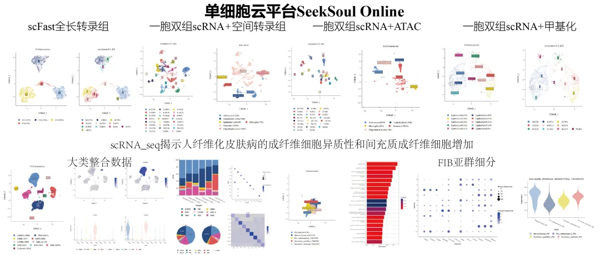
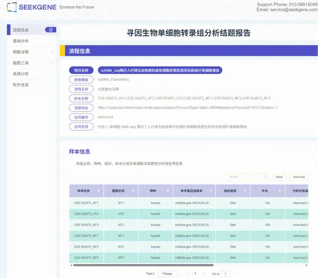

云平台怎么不算一种布置好的Vibe-coding呢
原文：https://mp.weixin.qq.com/s?__biz=MzAwMzIzOTk5OQ==&mid=2247543121&idx=1&sn=98b556777127f7dd340ef52e4e629d20&chksm=9b3c5001ac4bd9171ef2b170431376e7b8dd11065976aaa13359ac74d4513820a8b6f6037106#rd 合集：单细胞云平台
Biomamba有话说
近期恰好在做SeekSoul Online云平台直播教学，一个成熟的云平台，本质上就是一个已经帮你把 prompt、MCP、skills 和执行环境全配好的 AI Agent——而且它还自带算力，还给你出结题报告。 云平台学习资料下载：
云平台学习资料下载：
https://pan.baidu.com/s/1W0WRNaqQGZcL6lykds0nEg?pwd=2kee
提取码:2kee
一、vibe coding在生信分析中也有点尴尬
各个大厂都在开发自己的大模型和cli帮助大家做vibe-coding，让大家无代码、无痛分析数据。其实这事云平台类工具一直在做，并且现阶段做的比vibe-codding要好一点。首先叠个甲，我个人是很倾向于学习并使用AI地，我并不是反智者，但现在vibe-coding的确存在一些尴尬的局面：1、AI幻觉和无用造成了安全性和正确性的问题：《PNAS》误用AI撤稿，不怕被坑，那就把所有工作都丢给AI就好了2、频繁的交互：需要对AI Agent精准描述你想要什么，然后看结果对不对，不对还得再说一遍3、搭Agent：大模型只能当大脑，怎么高效准确地干活还得挂一堆MCP让它能内设工具和数据，写一堆skills或者reference把领域知识封装进去，再配一个能跑代码的环境。有AI也不代表不用造轮子，搭了一圈环境发现也没比原来省多少时间。4、它每次给的代码不一样。 同一句话问两遍，出来的脚本可能不同，跑出来的图也就不同。你要写进论文方法学的时候，没法写"我们用AI生成了一段代码"。5、它只写代码，不给你机器。脚本给你了，动辄数百GB内存这件事它解决不了，现在各Agent的云电脑很少有能达到这么大的，算力还得你自己找。6、通用大模型在生信这种垂直的专业领域还不够聪明，不是大模型的问题，而是生信还不配引起大模型的关注。
二、云平台其实就是封装好的AI Vibe-coding
看懂这张表，你就明白为什么说云平台是"预装好的 Agent"了：你以为你在点按钮，其实你是在用一套别人已经调好、验证过、并且跑得动的专业能力。就很像一个已经被调教好的vibe-coding生态。
| AI Agent 的组件 | 云平台里对应的东西 |
|---|---|
| prompt （你怎么下指令） | 向导式参数面板：初始化 → 过滤 → 整合 → 聚类 → 注释，每一步都是"勾几个选项、填几个数" |
| MCP （能碰到哪些工具和数据） | 数据接入层直接读 RDS / Matrix / H5AD / H5 / Loom / HD，你不用预先转格式 |
| skills （封装好的领域能力） | 27 种高级分析模块 + 一整套基础分析流程 + 画图工具箱 |
| 领域知识库 | 自建"人 57 种组织""小鼠/大鼠 46 种组织"细胞注释参考集，内置 SingleR |
| 执行环境 （代码在哪跑） | 云端算力，本地不需要内存、不需要装环境 |
| 交付物 | 交互式 HTML 报告 + PDF + 全部图表 + 软件版本表（SessionInfo） |
三、skills才是云平台最大的优势
和以前分享代码不同，AI时代最爱聊的是skills——把领域常用的技能、参考、注意事项等封装成可复用的能力包。大模型懂语言，不懂组学 ，你得把组学知识喂给它，它才能在这一垂直领域内更好的发挥。这就意味着你在和AI交互时，不仅需要精准的描述提示词，还得为每个执行单元设写好skills来让AI根号的工作，内心：我都用AI了，你还让我造轮子？
而云平台这一层已经堆到什么程度了？这次课程我们实打实跑完了七个项目，下面这些高级分析模块不是"支持"，是已经跑完、状态全部 Success、图已经出好了 ：

单细胞转录组（常规）monocle3拟时序 ·CytoTRACE干性评分 ·hdWGCNA共表达网络 ·scenic转录因子 ·Augur扰动响应 ·scMetabolism代谢通路 ·cellphonedb细胞通讯 ·infercnv 拷贝数 · 基因集评分（预定义基因集）
scFast 全长转录组LncCoExpression（lncRNA 共表达） · Fusion（融合基因） · rMATS（可变剪切） · mut（突变）
一胞双组 RNA + ATAC 的ATAC_DiffEnrich · ATAC_Peak2Gene · ATAC_Monocle3 · SCENICplus 多组学调控网络 · GeneActivity · Trios · epiAneufinder
一胞双组 RNA + 甲基化RNA_MET
一胞双组 RNA + 空间转录组stlearn · Banksy 空间聚类 · SpaGene · COMMOT 空间通讯 · CellCharter · cellphonedb_spatial
一共 27 种不同的高级分析模块。
这里面随便拎一个出来，比如 SCENICplus——它要在同一批细胞里同时用 RNA 表达和ATAC开放程度两个证据去验证转录因子调控关系，流程是：转h5ad → pycisTopic 主题建模 → cisTarget 建motif库 → 推断TF-调控元件-靶基因 → eRegulon 评估与可视化。
你要是自己搭，即使是配上Agent，光这些环境和依赖也非常可能够你折腾一周的。所以，这些折腾的功夫，我们已经替你睬过坑了，你完全可以省略这个步骤。
四、所以云平台还是有点优势的
1、确定性：同样的输入，永远同一条流程
Agent 每次生成的代码不一样，这对造轮子、学新工具是好事，对发论文 就是灾难了，毕竟科研论文的可重复性直接反应了你的论文真实性与学术道德。
而云平台的每一份报告尾部都带一张软件版本表（SessionInfo），写清楚这一步用的是什么工具、什么版本。方法学那一段你可以照抄，审稿人问起来你有据可查。这次七份报告里，每一份都有。SeekSoul Online 这个平台本身是有正式论文背书的：终于可以引用SeekSoulOnline啦！。你引用的不是一个网页，是一篇同行评议过的文章。
2、你不需要有能力判断代码对不对
在云平台里，你根本不需要去接触代码。AI生成的内容太长了，给你一段几百行的单细胞脚本，里面某个参数写错了，你大概率看不出来，甚至你根本不会去看。
云平台的流程是预先验证过的 ，并且是真人验证过的。你不需要判断"这行代码对不对"，你只需要考虑"这个参数对我的样本合不合适"——比如质控阈值怎么定、整合选CCA还是 Harmony、聚类分辨率在 0.1–2 之间取多少。判断的难度，从"看得懂代码"降到了"了解自己的数据"。
3、算力直给，不需要你辗转筹备算力
Agent 能帮你把代码写出来，但它不会给你那台256GB内存的机器。云平台把这个沉默成本解决了：数据在云端、计算在云端、结果在云端 ，你本地只需要一个浏览器，能连网就能分析。提交完分析之后关掉电脑去去冲咖啡就好。
4、 交付物是论文级的，AI更像聊天记录
Agent给你的是一段代码和输出结果，相信大家都拿到过画外音很多、结果很多错误、图片不能正常显示的分析结果。使用云平台给你则科研得到：
-
交互式 HTML（点基因名直接跳 NCBI，双击基因看 FeaturePlot，降维方式随时切换）

-
一份排版好的 PDF
- 全部图表（降维图、堆叠柱形图/饼图、featureplot、vlnplot、dotplot、heatmap，颜色还能自己调）
- 软件版本表 + 引用致谢模板
这套东西是可以直接进补充材料、直接拿去和导师/合作者讨论的。而且它支持项目管理和多用户协作 ——一个课题组可以共用，Agent是你的私人物品，离开了你搭建地环境就玩不转了。
5、学习成本低
搭一个能用的科研Agent，你要会配环境、会写MCP、会调prompt、会管理skills、还得有计算设备。这套前置技能本身，比单细胞分析还难，或者说又给你额外增加了学习成本。云平台把这些前置技能全部吞掉了。你要会的只有一件事：明确你想分析什么。emm， 这不就是Vibe Coding的定义吗？
五、凡事没有绝对的，云平台也不是万能的
吹太过就没意思了。云平台确实也有些短板：
第一，预置模块之外的事它做不了。 27个模块听着多，但你如果有一个非常定制化的分析思路——比如自己设计的一个评分体系、一个还没人做过的新算法，云平台是不能像AI那样去即时获取的。云平台做的更像是通用分析。
第二，参数你得自己懂。 云平台把"怎么写代码"替你做了，但"参数怎么设"没替你做，也替不了。质控阈值、去批次方法、聚类分辨率，这些决定会影响你所有的下游结论。平台当然也会给你些建议作为提示信息，不过云平台降低的是执行门槛，不是判断门槛 。
第三，它给的是标准答案，不是发现。 云平台能告诉你"这一群是成纤维细胞""这群和那群之间有这些通讯信号"，但"这个发现意味着什么"这件事，的确不能像AI那样替你思考。
所以真正有些创新性的分析或者流程，还得看AI或者人工，无论你选哪条路，也许Biomamba都可以给你提供一些帮助：


欢迎交流

 留一个领取资料、开箱即用的单细胞分析镜像的助手[Biomamba_zhushou]，方便各位随时交流。同时我们也构建了交流群矩阵，欢迎大家一起讨论。
留一个领取资料、开箱即用的单细胞分析镜像的助手[Biomamba_zhushou]，方便各位随时交流。同时我们也构建了交流群矩阵，欢迎大家一起讨论。
 您点的每个赞和在看，我都认真当成了喜欢
您点的每个赞和在看，我都认真当成了喜欢